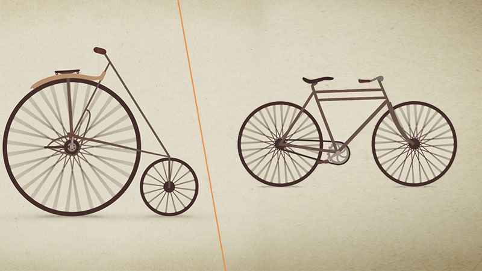

Doğa Dostu Bir Ulaşım Aracı Olan Bisikletin Tarihsel Gelişimi
Bisiklet ya da eski adıyla velespit, motorsuz insan gücü ile çalışan yaygın bir ulaşım aracıdır.
Geçmişten Günümüze Bisikletin Hikayesi
Teknolojinin gelişmesi ile uzun mesafeleri kolayca katedebilen insanoğlu her geçen gün ulaşım alanında ilerlesede bisikletten vazgeçebilmiş değil. Bisiklet, uzun ve masraflı bir bakım gerektirmemesi, hafif ve kullanışlı olmasıyla hala cazibesini koruyor.
İnsan gücü ile çalışan bisiklet, motorlu ulaşım araçlarının yanında doğa ve çevre dostu bir araçtır.
İlk Bisiklet Ne Zaman Yapıldı?
Bisikletin ortaya çıkışı günümüzden 200 yıl önceye dayanır. 1817 yılında Alman Baron Karl von Drais modern bisikletin prototipini oluşturan iki tekerlekli aracı icat etti.
Tarihteki ilk bisikletin nerede, ne zaman ve kim tarafından icat edildiği hakkında farklı görüşler ileri sürülse de günümüzdeki tasarıma yakın ilk bisikleti Fransa'da 1790’lı yıllarda Comte de Sivrac icat etti. Celeripede olarak adlandırılan, iki tekerleği olan, sert ahşap çerçeveden oluşan ve pedalı bulunmayan bu bisiklet ayakların hareket ettirilmesiyle ilerletilebiliyordu. Gidonu (bisikletin direksiyonu) ve selesi (bisikletin oturulacak yeri) bulunmayan bisikletin yönü, vücudun sağa ve sola eğilmesiyle değiştirilebiliyordu.

Comte de Sivrac tarafından tasarlanan bisiklet
1817 yılında Alman Baron Karl Von, Sivrac’ın ürettiği bisiklete bir gidon ve bir sele yerleştirerek draisienne adında bir bisiklet tasarladı. Bu bisikletin kütlesi yaklaşık olarak 22 kg’dı. Ahşap çerçevesi, demir tekerlekleri, jantları ve freni olan bisiklette yine pedal bulunmuyordu. Bu nedenle, tıpkı Sivrac’ın tasarımındaki gibi, bu bisiklete binip dolaşmak hayli yorucu oluyordu.

Baron Karl Von tarafından tasarlanan bisiklet
1839 yılında İskoç Kirkpatrick MacMillan, bisikletin göbeğine demir çubuklarla pedalları ekledi. Kullanıcı krank miliyle ön tekerleğe bağlanan pedalları ayağıyla öne ve arkaya sallayarak arka tekerleği hareket ettirebiliyor böylece bu bisikletle öncekilere göre daha hızlı yol alınabiliyordu.

Kirkpatrick MacMillan tarafından tasarlanan bisiklet
1850’li yıllara kadar denge problemini çözmek için üçüncü ve dördüncü tekerleğin eklendiği yeni tasarımlar ortaya çıktı. Ancak pedal ve çevirme kolunun kullanıldığı bu tasarımların çoğu ağırlık ve tekerleklerin sürtünme sorunu nedeniyle yaygınlaşmadı.
1860’lı yılların başında Fransız Pierre Michaux, oğlu ile birlikte geliştirdikleri ve velocipede olarak adlandırılan (Türkçeye velespit olarak geçmiştir) bisiklette pedalları ön tekerleğe sabitledi. Böylece kullanıcılar hızlı bir şekilde pedalları çevirebiliyordu. Ancak ağır demir iskeleti ve demir çerçeveli tekerlekleri yüzünden bu bisiklet yoldaki her çukur ve tümseğin üstünden geçerken sarsılıyor ve kullanıcıyı rahatsız ediyordu. Bu yüzden Michaux ve oğlunun tasarladığı bisiklet kemik titreten olarak anılıyordu.

Pierre Michaux’un oğlu Earnest Michaux “velocipede” üzerinde
1868 yılında Traffault adında bir başka Fransız, tekerlekleri kauçuktan yapılma lastik ile kapladı ve böylece yoldaki çukur ve tümseklerin neden olduğu sarsıntının verdiği rahatsızlık biraz olsun azaltılabildi.
1870’li yılların başında İngiliz James Starley daha hızlı hareket edebileceği düşüncesiyle ön tekerleği arka tekerleğine oranla hayli büyük olan bir bisiklet üretti. Tekerleklerinin şekli nedeniyle bu bisiklet dönemin en büyük ve en küçük İngiliz metal paralarından esinlenilerek penny farthing olarak adlandırılıyordu. Pedalları ön tekerlekte bulunan bisikletin selesi de ön tekerleğin üzerinde yer alıyordu. Bu bisikletin üzerine çıkıp oturmak bir hayli zordu, ayrıca bisikletin devrilmesi durumunda yaralanma riski hayli yüksekti. Hızı da düşünüldüğü kadar fazla olmayan bu bisiklet de çok tutulmadı.

James Starley tarafından tasarlanan bisiklet
Günümüzde kullanılan eşit büyüklükte tekerleklere ve zincire sahip, gidonlu ve seleli bisiklet ise 1885 yılında İngiliz John Kempp Starley tarafından icat edildi. Bu bisiklet “velocipede”e göre çok daha rahat, ön tekerleği büyük olan bisiklete göre ise daha hızlı ve manevra kabiliyeti yüksekti. Tekerleklerinin eşit büyüklükte olması da bisikleti daha güvenli hâle getirdi.

John Kempp Starley tarafından tasarlanan ve modern bisikletlerin öncüsü sayılan bisiklet
1880’lerin sonunda vites sistemlerinin geliştirilmesi ve tekerleklerin havayla şişirilen lastiklerden üretilmeye başlanmasıyla birlikte bisikletler çok daha konforlu hâle geldi.
Günümüzde dağ bisikletlerinden yarış bisikletlerine çeşitli amaçlar için kullanılmak üzere çok sayıda bisiklet üretiliyor. Çevre kirliliği yaratmaması, ekonomik ve pratik olması bisikletin birçok insan tarafından kullanılmasını sağlıyor. Dünya genelinde şu anda 800 milyondan fazla bisiklet bulunuyor. Bu rakam yollardaki araba sayısının iki katına denk geliyor. Birçok ülkede olduğu gibi ülkemizde de bisiklet kullanımı özendiriliyor ve bisiklet yolları inşa edilerek bisiklet sayısının artırılması hedefleniyor.

Bisikletin Günümüzdeki Hali